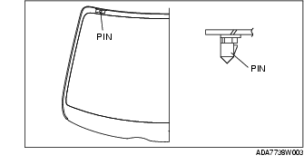
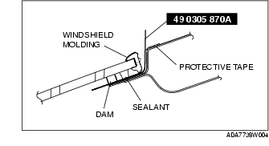

Windshield removal
1. Remove the cowl grille.
2. Remove the rearview mirror.
3. Remove the headliner.
4. Apply protective tape along the edge of the body to protect it from damage.
5. Apply protective tape to the dashboard to protect it from damage.
6. Cut the lip of the windshield molding using a razor.

Not Reusing Windshield
- • For the areas of the sealant that are difficult to cut, use the SST (piano wire) and follow the procedure under "Reusing Windshield".
1. Remove the base.
2. Cut out the sealant all around the glass using a sealant remover.

3. Remove the sealant by pulling it off.
4. Remove the windshield.
Reusing Windshield
- • Before removing the windshield from the body, mark the position of the windshield by affixing tape to the windshield and body panel.
1. Make a hole through the sealant from the inside of the vehicle using an awl, avoiding the pins.

2. Pass the SST (piano wire) through the hole.

- • Using the SST (piano wire) with bare hands can cause injury. Always wear gloves when using the SST (piano wire).
3. Wind each end of the SST (piano wire) around a bar.
- • Use a long sawing action to spread the work over the whole length of the SST (piano wire) to prevent it from breaking.
4. Working with another person, saw through the sealant around the edge of the glass.

5. Remove the windshield.
6. Remove the pins from the windshield.
7. Remove the windshield molding from the windshield.
8. Remove the dam from the windshield.